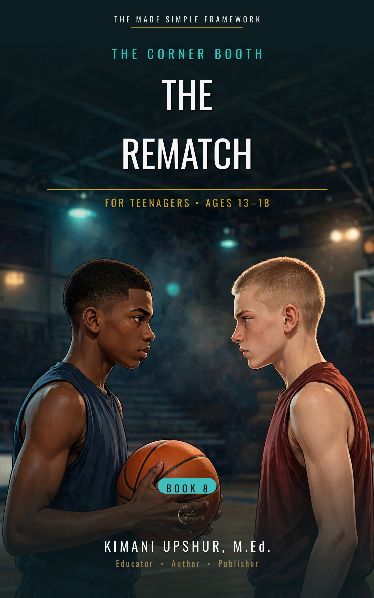

Home / Kids & Teens / Teenagers

The Rematch
The Corner Booth, Book 8
by Kimani Upshur, M.Ed.
Marcus Bennett clawed his way back from September — the playbook he saw, kept, and finally confessed, the probation, the opener watched in exile — and March has brought Alder Creek to a championship rematch with Northgate, with the hardest question of his season waiting in his own locker room: Trey Holloway, the senior whose fall cost Marcus the most, is the player Coach Daniels needs in the closing group, and Daniels asks Marcus whether he trusts him with the season on it. Whatever Marcus answers will be paid for with the name he has spent six months rebuilding — and what he has to spend is what he received first, back in September: forgiveness, rooted first in Jesus Christ, who forgave him before he had finished paying any of what he owed, recognized — not invented — at his friends' table, true before he ever felt it was true. Then Priya Nair asks the question she has been quietly assembling for months — 'Do you actually feel forgiven?' — and Marcus discovers that knowing it and feeling it are two different accounts, and that the distance between them can only be closed out loud. Rooted in Romans 12:17–21 — overcome evil with good — The Rematch is a Christian young adult novel about trust, forgiveness, and the long road back. It is Book Eight of The Corner Booth series.
- Publisher
- Upshur Unlimited, LLC
- Author
- Kimani Upshur, M.Ed.
- Format
- Ebook
- List Price
- $4.99 USD
- Language
- English
- Audience
- For Teenagers • Ages 13–18
More Teenagers Books
Explore the full collection of books for teenagers.